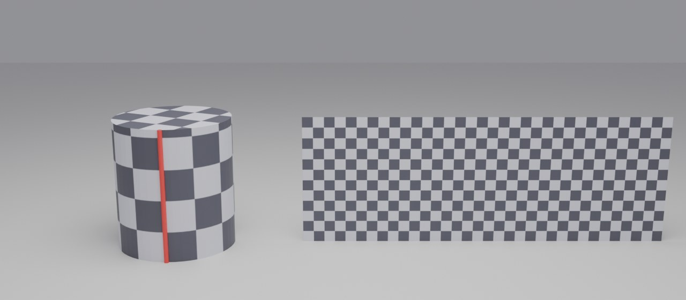

Bonus lesson
UV Seams
In the UV Unwrapping lesson, the first step of the workflow was to mark seams. The manual explains why: for simple shapes the Unwrap options usually give a good layout, but for complex meshes, especially those with lots of indentations, you define a seam to limit and guide the Unwrap operator. A seam is an edge where the UV map is cut, like the seam in a piece of clothing.
1. Peeling an orange
The manual compares unwrapping to peeling an orange or skinning an animal: you make a series of cuts in the skin, peel it off, and flatten it out with some stretching. The cuts are your seams. The more seams you add, the less stretching there is, but more seams make texturing harder, because the edges of separate UV islands are difficult to match in 2D textures. The manual's advice is to use as few seams as possible while keeping stretching low, and to hide seams where they will not be seen.

2. Mark and clear a seam
In Edit Mode, select an edge and press Ctrl+E to open the Edge menu, then choose Mark Seam; the same menu has Clear Seam to remove it. Mark/Clear Seam is also in the UV menu of the 3D Viewport. The manual's cylinder example selects the back-most edge as the seam, so the seam is hidden from the front, then uses the default unwrap: the faces unwrap neatly, as if cut with scissors and spread out like fabric.
3. Check and use your seams
To check your work, use Select Linked in Face Select Mode: it selects all faces connected to the selected one, up to a seam. If faces outside your intended region get selected, the seam is not continuous. The manual notes seams do not have to be continuous as long as they relieve the regions that would stretch. Seams can also limit what gets unwrapped: seam off the scalp of a head you plan to cover with hair, and selecting linked faces from the front will stop at that seam. For symmetrical models like a head or body, the manual suggests seaming along the mirror axis so both halves can share the same texture space.
Read the manual page on seams.
Exercise
Add a cylinder and unwrap it with no seams, then check the checkerboard on its side. Now clear that, select one vertical edge on the back and the edges around the top and bottom rims, press Ctrl+E and choose Mark Seam, and unwrap again. Compare the UV Editor before and after: with the seams, the side opens into a flat rectangle.